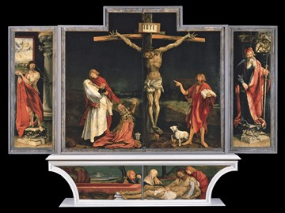

Soeur Wendy Beckett
HỘI HỌA CUỐI THỜI KỲ GOTHIC
Gérard David, Jérôme Bosch và Matthias Grunewald là những nghệ sĩ ở
đầu thế kỷ 16 và đồng thời với Albrecht Dürer, Lucas Cranach và Hans
Holbein. Tuy nhiên, tác phẩm của những người đầu còn gắn chặt với
truyền thống gothic trong khi những người sau thì đã chịu ảnh hưởng
mạnh mẽ của thời đại Phục hưng Ý. Hai khuynh hướng nghệ thuật gothic
và Phục hưng đã song song tồn tại như thế ở Bắc Âu trong nửa đầu thế
kỷ 16.
Gérard David (khoảng 1460-1523), người kế tục không chính thức của
Memling ở Bruges là một họa sĩ nổi tiếng có xưởng vẽ phát đạt. Hình
tượng Đức Mẹ của ông, gần như một đứa trẻ, làm người ta say mê ngay
bởi cái vẻ mong manh đầy xúc động. Trong bức tranh Nghỉ chân trên
đường chạy trốn tới Ai Cập, Đức Mẹ cầm một chùm nho cho Chúa Hài
Đồng, biểu tượng cho máu khổ hình, nhưng vẻ mặt trầm tĩnh của bà
không cho thấy một dự cảm nào. Bà hoàn toàn để hết tâm trí vào Chúa
Hài Đồng, trong một sự mơ màng triển miên, tất cả gánh nặng dã dồn
cho thánh Joseph ở hậu cảnh và con lừa đang trầm tư.
Phong cách đặc trưng của Hà Lan ở đầu thế kỷ 15 mà dại diện là tranh
của Campin và Van Eyck, đạt tới cực độ với tác phẩm của David. Ở họa
sĩ này, chúng ta thấy được những phẩm chất hoành tráng của truyền
thống Bắc Âu, cuồng nhiệt với hình ảnh mới của hội họa, cái truyền
thống sẽ có ảnh hưởng tới Quentin Metsys và Jan Gossaert (tức
Mabuse). Ở hai họa sĩ này, những truyền thống khác biệt của phương
Bắc và phương Nam lại pha trộn lẫn nhau, nhưng chỉ sau khi thời kỳ
phục hưng Ý tạo được ảnh hưởng lớn lao và không gì cưỡng nổi. Nghệ
thuật Bắc Âu vẫn giữ tính chính thống của nó nhưng có hơi hướng Ý.
BOSCH: MỘT Ý NIỆM DUY NHẤT
Jérôme Bosch (khoảng 1450-1516) là một họa sĩ kỳ lạ, ông thoát ra
khỏi sự ràng buộc của truyền thống Flandre. Phong cách độc đáo của
ông có tính tự do làm người ta sửng sốt, và chủ nghĩa tượng trưng có
một sức mạnh đặc biệt, tới nay vẫn không có người sánh kịp. Phong
cách đó biểu thị một tinh thần bi quan mãnh liệt và phản ánh sự ưu
tư của một thời đại bị giày vò vì những xáo trộn xã hội và chính
trị. Người ta biết rất ít về Bosch, - điều này có vẻ phù hợp với tác
phẩm rất bí hiểm của ông, ngoại trừ việc ông lấy tên theo tên của
thành phố Hà Lan, gần Anvers, Hertogenbosch, việc ông thuộc một cộng
đồng tôn giáo có tên là hội Đức Bà và việc ông nổi tiếng ngay khi
còn sống.
Tranh của ông thường thể hiện đề tài tôn giáo, và nhiều bức lấy đề
tài khổ nạn của Chúa. Ông độc biệt nổi tiếng về những tác phẩm hư
ảo, quái dị, đầy hình ảnh ma quỷ và quái vật, trong đó có bức Cám dỗ
của thánh Antoine.
Trên tấm giữa của bộ tranh ba tấm này, thánh Antoine bị những con
quỷ, người có đầu như mọc gai và những con cá-thuyền giày vò. Dù có
vẻ kỳ lạ, quái dị đối với chúng ta, những hình ảnh này hẳn là quen
thuộc với người dương thời, bởi chúng ám chỉ tới những ngạn ngữ
Flandre và một thuật ngữ tôn giáo. Điều phí thường là niềm tin sâu
sắc đã cho nét bút của Bosch thêm sinh khí, như thể những sinh vật
tưởng tượng đó có thật. Ông đã cho mỗi sáng tạo quá quắt của ông
cùng một nét hiện thực như các nhân vật và con vật của ông. Những
hình ảnh như trong ác mộng dường như có một sức mạnh siêu nhiên
không giải thích được.
Ngay một bức tranh như Đường đời theo phong cách tự nhiên hơn, cũng
có những yếu tố ghê khiếp. Ngoài con chó gầm gừ với ông lão khốn
khổ, chiếc sọ và những cái xương thú vật ở tiền cảnh, còn có những
tên cướp đang tấn công một khách lữ hành ở hậu cảnh và một nạn nhân
đang chạy ra xa. Bức Đường đời được về ở mặt sau của một tấm trong
bộ tranh ba tấm. Ba tấm tranh phía sau trình bày nhãn quan bi thảm
của Bosch đối với cuộc sống con người, nhấn mạnh sự thắng thế của
tội lỗi. Thiên đường đã mất được thể hiện ở bên trái, những thói hư
tật xấu của con người ở giữa, và hậu quả của chúng, sự sa địa ngục,
ở bên phải.
MINH HỌA PHÚNG DỤ
Trong bức Chiếc thuyền của người điên, Bosch đặt loài người vào một
chiếc thuyền nhỏ trên biển thời gian. Tất cả người trên thuyền đều
là người điên. Bosch nói rằng đó là cuộc đời của chúng ta, chúng ta
ăn uống, yêu đương, lừa đảo, dự những trò chơi ngu ngốc, theo đuổi
những mục tiêu không thể đạt tới. Trong thời gian đó, con thuyền của
chúng ta trôi giạt không mục đích và không bao giờ chúng ta tới được
bến. Tôn giáo được tượng trưng bằng một tu sĩ và một nữ tu, nhưng họ
cùng thuộc vào nhóm những người sống "trong sự ngu ngốc". Bosch chế
nhạo, nhưng nụ cười của ông rất buồn. Trong chúng ta, ai là người
không ngồi trong chiếc thuyền điên dại đáng buồn của nhân loại?
Thiên tài bí hiểm và kỳ quặc, Bosch không chỉ làm chúng ta xúc động,
ông gây công phẫn bằng cách mở mắt chúng ta. Những quái vật hung dữ
mà ông trưng ra là những sản phẩm sâu kín của tinh thần tự kỷ trong
tâm của chúng ta. Ông phơi bày cái xấu xa bên trong của chúng ta, vì
vậy những con quỷ dị dạng của ông đạt được mục đích nhiều hơn sự tò
mò của chúng ta. Chúng ta không ưa cảm thấy cùng một gia đình. Chiếc
thuyền của người điên không liên quan tới người khác, nó liên quan
tới chúng ta, chính chúng ta.
MỘT BÀI NGỤ NGÔN LUÂN LÝ
Bức Cái chết của người keo kiệt, cũng của Bosch, là một lời cảnh cáo
cho bất cứ người nào bám chặt vào những lạc thú của cuộc đời và
không sửa soạn cho cái chết. Ai có thể dửng dưng với lời ngụ ngôn
đó? Trong một khung hẹp trên cao, Bosch dàn dựng câu chuyện thương
tâm.
Người hấp hối, trần truồng, trước kia là một người hùng mạnh. Ở phía
chân giường, cách một bức tường thấp, là bộ áo giáp của ông ta. Con
người đó hẳn đã chiến đấu để tranh đoạt của cải, và ông chồng chất
của cải bên mình. Bosch thể hiện ông ta hai lần, lần thứ hai trong
dạng một người mạnh khỏe, ăn mặc giản dị vì ông đang thu nhặt vàng
bạc, bỏ thêm một đồng vàng vào túi vàng của mình, toàn bộ con người
ông ta biểu lộ sự hài lòng cao độ. Những con quỷ quanh quẩn bên ông,
tử thần lấp ló sau cửa, ném một cái nhìn thèm thuồng (hãy để ý vẻ
ngạc nhiên của người bệnh; người ta không bao giờ chờ đợi cái lúc
mình phải chết), và cuộc chiến đấu cuối cùng bất dầu lần này con
người trơ trọi, không có áo giáp. Cả trong giây phút cuối cùng đó,
trước mặt ông ta cũng có một con quỷ đem vàng cám dỗ ông. Phía trên
ông ta, một con quỷ khác đang nhìn, hết sức chú ý và đẩy hy vọng.
Câu chuyện chưa kết thúc. Chúng ta rất mong còn người tham lam đó bỏ
rơi của cải trần gian để chấp nhận thực tế của cái chết.
HÌNH ẢNH CHÚA BỊ ĐÓNG ĐINH
Yếu tố trung tâm của bức tranh là cuộc chiến đấu giành linh hơn của
kè tham lam. Thân hộ mạng của ông ta cố gây ảnh hương để cửu với
linh hơn của ông - có lẽ là không hiệu quả - và lôi cuốn sự quan tâm
của hè hấp hồi từ hình ảnh Chúa bị đóng đinh ở trên cao - cũng vô
ích nối.
CHÂN DUNG TỰ HỌA ?
Ở tiến cảnh, một con quý nhỏ nhìn chúng ta, nấp sau chiếc áo lụa của
người hấp hối; đây là bộ mặt thường thấy trong tranh của Bosch, Ôm
o, nhăn nhúm, không hy vọng. Có phải đây là chân dung của chính
Bosch, được vẽ một cách mỉa mai cay độc ?
SỰ CÁM DỖ CUỐI CÙNG
Một con quý kỳ dị biết sự yếu đuối của kè tham lam, đưa cho ông ta
một túi vàng để chiếm linh hồn ông ta. Chúng ta phải tự rút ra kết
luận trong tấn kịch này của con người, nhưng củ chỉ thèm thuống của
người hấp hối vẫn còn tham muốn của cải vật chất cho thấy ông ta đã
thua.
TIỀN BẠC VÀ BẢN ÁN
Sự dâm ô, thói tham ăn và tính keo kiệt là ba đại tội và là những
chủ đề phổ biến trong những bài thuyết giáo ở thế kỷ 15.
Chiếc tủ sắt chiếm vị trí trung tâm, đóng vai trò nguyên nhân của
bản án cho kẻ tham lam. Trái với người xem, người tham lam dường như
không nhìn thấy những con vật xấu xa độc ác nấp trong tủ. Ông ta
cũng không biết rằng trùng hạt ông ta đeo bên chiếc chìa khóa không
cứu giúp gì cho ông ta.
Ý NIỆM BI THẢM CỦA GRÜNEWALD
Đóa hoa cuối cùng của nghệ thuật gothic xuất hiện tượng đối trễ: tác
phẩm của họa sĩ Đức Matthias Grünewald (tên thật là Mathis Gotthardt
hay Neithardt, (khoảng 1470-1528), người đồng thời với Dürer. Trong
khi Dürer chịu ảnh hưởng sâu đậm của phong trào Phục hưng thì
Grünewald không biết tới phong trào đó, trong sự chọn lựa chủ đề
cũng như phong cách thể hiện. Phần lớn tác phẩm của ông đã mất hết,
nhưng những gì còn lại cũng cho phép khẳng định Grünewald là một
trong những họa sĩ biểu tượng vĩ đại nhất. Không có họa sĩ nào khác
đã thể hiện sự khủng khiếp của thống khổ một cách kinh khủng và xác
thực đến thế, nhưng, trái với Bosch, vẫn không đánh mất niềm tin vào
sự cứu rỗi. Bức Chúa bị đóng đinh (hình 10) của ông là một trong
nhiều tranh bày trên bàn thờ nhà thờ Issenheim (Đức) để củng cố tinh
thần của người bệnh ở bệnh viện của tu viện. Hình ảnh Chúa trông rất
kinh khủng, da bị căng ra và bị rách vì roi vọt tra tấn, hình ảnh có
sức mạnh mẽ đối với một bệnh viện trị bệnh ngoài da.

Matthias Grünewald, Chúa bị đóng đinh (Isenheim Altarpiece),
khoảng năm 1509 - 1515, 105 9/10 inches x 10 feet, Unterlinden
Museum, Pháp
Bức tranh khổ nhỏ, cũng lấy đề tài Chúa bị đóng đinh. Bức tranh
chiếm hết không gian, đè bẹp chúng ta, không chừa một lối thoát, cơn
hấp hối tràn ngập hết bức tranh. Xung quanh là núi non và bóng tối,
chúng ta đơn độc với sự đau đớn của Chúa, chúng ta bắt buộc nhìn vào
sự thật. Một đoạn kinh trong Cựu ước mô tả "người phụng sự chịu đau
khổ đó như "một con sâu chứ không phải một con người". Trong cái cao
cả của sự thật đó, nghệ thuật gothic đã đạt tới mức kích động lớn
lao.
Bức Chúa bị đóng đinh khổ lớn là sự nghiên cứu phi thường về sự đau
khổ của con người, sự đau khổ mãnh liệt làm hình dạng người ta biến
đổi.
SỰ ĐAU ĐỚN CỦA THỂ XÁC
Cọc thánh giá là cột gỗ xoàng, oằn dưới sức nặng cơ thể của Jesus.
Chúa đang hấp hối, hai cánh tay bị kéo dài ra một cách khác thường,
biểu thị sự đau đớn ghê gớm, vừa như một lời trách móc tuyệt vọng,
vừa như sự phó thác trong tay Chúa.
LỜI TIÊN TRI CỦA THÁNH JEAN
Thánh Jean - Người rửa tội đi chân không, mặc áo da thú, biểu tượng
thời gian ông ở trong sa mạc, và cầm một quyền sách. Dường như ông
cố chống chọi sự kinh khiếp của thời điểm đó và tỏ ra vừng vàng tin
tưởng vào lời tiên tri nổi lên trong bóng tối của bầu trời: "Người
đến sau ta sẽ mạnh mẽ hơn ta." Thánh Jean phát biểu thông điệp hy
vọng và cứu chuộc của giáo lý cơ đốc, và như vậy đã cần bằng cảnh
tượng đau đón.
SỰ ĐAU ĐỚN CỦA NGƯỜI THÂN THUỘC
Cách biệt với hình ảnh khắc kỷ của thánh Jean - Người rửa tội, ở
phía bên kia thân hình Chúa bị hành hạ và đang hấp hối, là những
người thân thuộc, tâm hồn tan nát. Đức Mẹ Maria là người đi, vì đau
đớn kiệt lực hoặc vì để khỏi nhìn thấy Con mình bị đóng đinh. Thoạt
đầu, Grünewald đã vẽ Bà đứng thẳng; về sau, ông vẽ Bà ngã ra sau,
bất tỉnh. Thánh Jean - Người viết Phúc âm, tuyệt vọng, đã Bà.
HÌNH ẢNH HẤP HỐI
Grünewald đưa nỗi ám ảnh của nghệ thuật gô tích về sự thống khổ, tội
lời và cái chết lên tới điểm cao nhất. Ở đây, Chúa Jesus được thể
hiện như một kẻ tuẫn đạo thật sự, khác hần hình ảnh mạnh mẽ, đẹp đẽ
của Chúa Cứu thế hùng dúng thời Phục hưng. Cách nhìn của Grünewald
cho thấy một hình ảnh khủng khiếp, biểu tượng của sự tàn bạo và sự
hư hỏng của con người, nhưng cũng là sự thể hiện lòng xót thương tối
cao và on phước của Chúa Cứu thế.
CON CỪU CỦA CHÚA
Con cừu, con vật hiến sinh của người Do thái, được tín đồ cơ đốc đầu
tiên chọn làm biểu tượng cho sự hy sinh của Chúa Cứu thế. Thánh Jean
khi gập Chúa đã nói: "Đây là con cừu của Chúa Trời." Hình ảnh con
cừu thường được vẽ với một thánh giá.